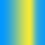
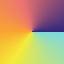
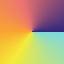

Gradient Texture Generator
The Gradient Texture Generator is an editor tool that allows you to create 1D and 2D gradient-based textures inside Unity. These textures are ideal for shaders, lookup tables, color ramps, toon shading, stylized effects, masks, UI gradients, and learning color transitions.
Open it via:
Gamelogic → Tools → Texture Generation → Gradient Texture Generator
Overview
The tool supports the following gradient types:
- Single Color
- Gradient
- Curve-Based
- Sine-Based
It also supports multiple sampling modes (X/Y/Radial/Angular), discrete step ramps, circular gradients, and more.
How It Works
- Select the Gradient Type.
- Adjust the Sample Settings (color source, curves, sine controls).
- Adjust the Generation Settings (direction, angular options, flipping, discrete steps).
- Review the Preview (updates automatically).
- Click Save Texture to export as PNG.
Texture generation tools explain the workflow and global settings.
Gradient Types
Below are all available gradient modes and their configurable properties.
Single Color
Produces a solid-color texture.
| Control | Range | Description |
|---|---|---|
| Color | 🎨 | Output color for all pixels. |

Gradient
Uses Unity’s built-in Gradient object to produce a smooth blend between color keys.
| Control | Range | Description |
|---|---|---|
| Gradient | 🌈 | Standard Unity gradient editor. |

Curve-Based
Uses two animation curves (one for color interpolation, one for alpha) and a list of sampled colors.
| Control | Range | Description |
|---|---|---|
| Curve | Curve | Controls the sampling position from the color list. |
| Alpha Curve | Curve | Controls opacity over t. |
| Colors | 🎨* | List of colors sampled evenly along the curve output. |

Sine-Based
Creates a periodic gradient using a sine wave, combined with a color list.
| Control | Range | Description |
|---|---|---|
| Frequency | [0, ∞] | Number of sine oscillations. |
| Phase Fraction | [0, 1] | Starting phase offset of the sine wave. |
| Amplitude | [0, ∞] | Sine amplitude (vertical scaling). |
| Amplitude Offset | [-∞, ∞] | Vertical offset applied before clamping. |
| Colors | 🎨* | List of colors sampled after sine evaluation. |

Generation Settings
These settings modify how the gradient is mapped into texture space.
Direction
Defines how t is computed across the texture.
| Control | Range | Description |
|---|---|---|
| Direction | {X, Y, Radial, Angular} | Sampling direction used to compute t. |
| Flip T | {true, false} | Inverts the gradient (t → 1−t). |

 

Angular Settings
Only visible when Direction = Angular.
| Control | Range | Description |
|---|---|---|
| Offset Angle | Degrees | Rotates the angular gradient around center. |
Discrete Steps
Allows the gradient to become a stepped ramp.
| Control | Range | Description |
|---|---|---|
| Discrete Steps | {true, false} | Enables stepped mode. |
| Steps | Integers ≥ 1 | Number of steps in the gradient (1 = flat). |
| Circular Gradient | {true, false} | Wraps the highest step back to the first (cyclic). |